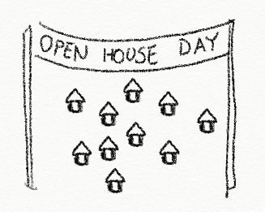

Problems
Finding a Place to Live is the Very First Problem international students are facing, which can highly impact their future development.
Studies show that the satisfaction of housing may influence students’ academic and social development, especially in the first two years. However, most international students have obstacles looking for a place to live.
This project address the inability of international students to seek a suitable place to rent. I explore the problems these students are facing and find ways to tackle these challenges with design solutions.
Overview
Cut Down the amount of information, Flexibly Apply the filters, and Check It Yourselves.
Enter Commuting Preferences
- Based on my research, commuting is the first thing users care about.
- Effectively lower the amounts of information users exposed to.
- The one-sentence design is easy to understand and makes users feel like answering fewer questions.
Filtering
- Different filters enable users search flexibly.
- Users mostly care about the rent, the numbers of roommates, and the reputation.
- The compare feature allows users to find out the most suitable properties.
Remote Room-viewing
- Enable users to view the room without physically be there.
- Utilize existing products of real-time translating and remote-contral robots as innovative solutions.
- Share record for the other users.
Research - Interview
Interviewed into Why international students can't find the most suitable places?
In my research, I drew the attention to Ann Arbor, a classic college town which ranked 4 for the popularity of the international students in the states.
I met with 4 interviewees and asked them about their experience looking for a place to live in Ann Arbor. During the interview, they were asked to talk about the following topics:
- Their previous living experiences.
- How they find the place currently live in?
- Their satisfaction with the place they live in.
- The most important critiria of looking for a place.
- What makes them unsatisfied with the current place?
According to the interviews, most of them were not satisfied with the current place and looking for opportunities to move.
Also, I concluded these 4 Pain Points
Expose to too much Information
There are lots of properties for rent in Ann Arbor, but the information is scattered in different websites. Also, while most of them are not fitting the critiria, international students feel frustrated filter through them one by one.
Lack of time for making the best decision
Most international students have about 3 months looking for a room, but they have to deal with other problems at the same time. Also, these students are mostly doing their jobs or finishing their degrees during the time searching for the rooms.
Can't see the room in other countries
Most of the properties for rent don't come with enough images to check environment for both inside and outside. But they are not able to do a room-viewing without being there.
Have problems communicate with the landlords
Some of the students are not confident with their English ability and avoiding verbal communication with the landlords. This situation makes it harder for them to get a better understanding of the properties.
Research - Competitor Analysis
I collected 4 Main Ways people looking for housing informations
UM Housing site
UM’s housing site provides housing information about both on-campus and off-campus. The amount of information provided is overwhelmingly huge.
MTSA life database
A wiki-like forum constructed and maintained by a few studentsby Taiwanese students. The information is outdated and very few on the amounts.

Facebook groups
Facebook groups as a platform. The information in the groups are messy and hard to search with.
Apartment List
A questions-based apartment recommandation system. Their are too many questions to answer during the process.
Compared four competitors and found out 3 Problems I should address
Less is more
There are many options for the students, but with limited time, it's essential to keep the results precise.
To see is to believe
It's better to see through every corner before rent the room. But students live too far for a room-viewing.
Language matters
It's already convenient to contact online, but having English as a second language is a barrier to communication.
Design - Personas
Personas were built based on interviews and served as references.
User Persona
Shiao-Ming Wang
Taiwan
Male
22 years old
Undergraduate
- Motivation:
- Budget | ★★★★★
- Commute Time | ★★★★★
- Search Time | ★★★
- Communications | ★★★
- Goals:
- Find a place to live with reasonable costs
- Get to learn more about Ann Arbor
- Frustrations:
- The weather is so differed between his hometown and Ann Arbor
- Have limited experience speak in English
- Have limited experience rent a place
Anti-Persona
Andrew Williams
Canada
Male
30 years old
Manager
- Motivation:
- Social Life | ★★★★★
- Search Time | ★★★★
- Budget | ★
- Goals:
- Live near friends
- Learn more about the house
- Frustrations:
- Has to travel to Ann Arbor for room-viewing
- Care about the roommates he’ll have
Design - Brainstorming
Based on research findings, I brainstormed for Potential Solutions.
International Brokers
VR Room-viewing
Robot Room-viewing
Housing Mentor
Precision Searching
Open House Day
Merging Functions from the potential solutions
I used QOC analysis to evaluate each of the potential solutions
To merge the advantages from each possible solutions into a comprehensive solution,
I extracted ideas from possible solutions and came up with the main feature of the design:
1. Provide precise housing information.
2. Enable room-viewing with robots or friends.
Design - Search
Decided the method to Prevent the Users from Information Overload
Gather Personal Data
Require users to log in with social media accounts. Collect personal data from the accounts and provide recommendations based on the information gathered.
Ask Questions
Users have to answer several questions. The system provides recommendations based on their preferences.
Search and Filter
Enable users to search and filter through all the results available.
Evaluated the Design based on 4 criteria users care the most
I used QOC analysis to evaluate each of the potential solutions
I used the criteria based on opinions from users and peers to evaluate potential solutions and came up with the final solution:
1. For better efficiency, ask questions about users' preferences at the beginning.
2. Apply filter tools for users to choose the preferences they care about.
Mixed Approach
Users answer a few questions to narrow down the amounts of the results and apply filters for further search.
I adopted the design of Kickstarter exploring page
Final Interface
Gather multiple questions into one sentence, help users to understand and answer effortlessly.
User Testing - Filters
Tested the mockup with the users to refine the filter feature
I took my design to two potential users I interviewed before and asked them to demonstrate the task of searching for properties. From my observation and their feedback, I modified some details to make the experience more smooth.
"May I change my preferences on traffic while searching?"
First Refinement
Both users asked to refine their commuting preferences on the map page. So, I added the question from the main page to the filter bar to enable it.
However, in the second user test. One of them asked again:
"Where can I change my preferences on traffic?"
Final approach
The user told me that he thought the traffic filter is just a sentence instead of a form. I then realized the importance of keeping design unity.
A paper prototype was used for the first user test.
Click here for the demo video
User Testing - Compare Feature
Two potential users were asked to demonstrate a task of compare between properties.
"Okay...I clicked the compare, and...?"
Original Design
In the original design, users have to click the "Compare" button of two items to compare.
Refined
Based on my observation and user's feedbacks, I changed the "Compare" feature to compare saved items only.
Also, users told me:
"Too many information on the page make me overwhelmed."
Final approach
Based on the user's feedback, I decreased the amounts of characteristics showing in the "Compare" page in the beginning, and users may choose to apply those they care about.
*I also made a digital prototype, and here's the video.
Takeaways & Reflection
Takeaways
Evaluate and learn from the existing designs
Keep looking for existing designs. Learn from them, extract their advantage, and merge them. Sometimes, the solution is just one step away, and what we should do is to be aware of it, and reach it.
Effective design doesn't have to be a massive project
Experience can be improved dramatically with minor changes, like adding a page or changing the order of items. And these changes should be based on user needs.
Reflection
Be ambicious
I tested my design with several domestic students, and they found it useful. I then noticed that the needs of international students on housing might be very similar to the inter-state students. This design had the potential of a better influence if I included broader target audiences at the beginning.
Furthur steps needed for remote room-viewing
While some of the users reflected that they don't care whether they can see the room before renting it, I put most of my efforts on the search feature. But if I had more time, the details in remote room-viewing would be interesting to explore.
My Role
UX Researcher
UX Designer
UI Designer
Research
Literature Review | Competitive Analysis | Interview
Design
Story Board | Persona | Prototyping
Duration
4 months (Sep. - Dec. 2019)